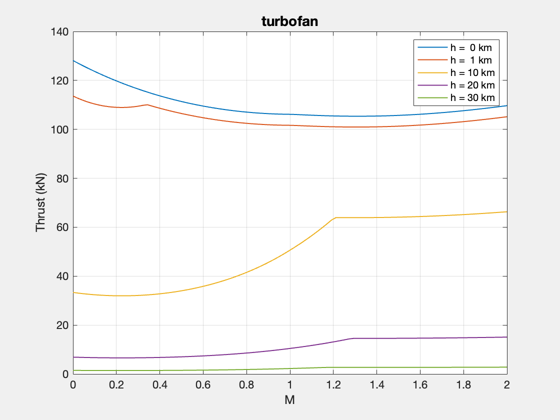
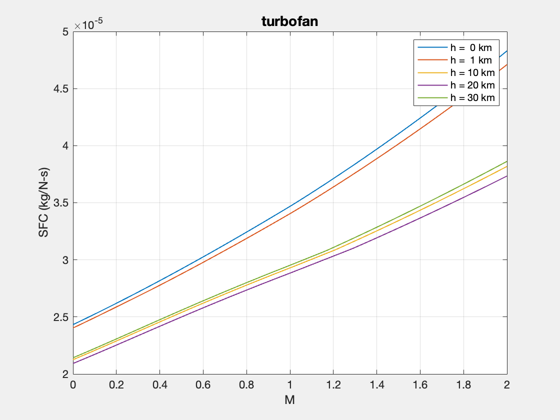
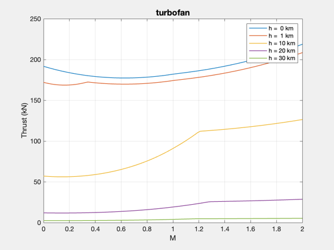
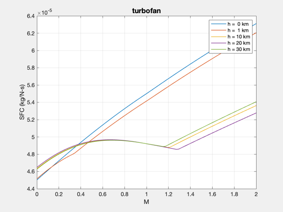
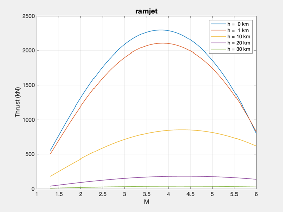
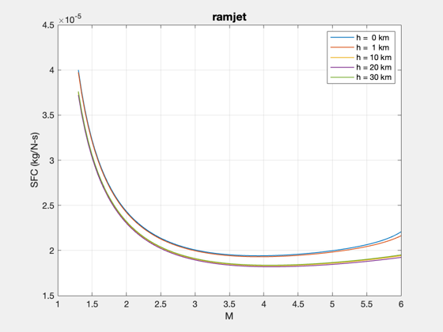

Model of the Pratt & Whitney F135 Engine.
The afterburner temperature was scaled to produce the correct thrust with reheat. The mass flow was set to produce the correct thrust without reheat.
%-------------------------------------------------------------------------- % References: % [1] www.f-16.net/f-16_forum_viewtopic-t-6295.html % [2] www.f135engine.com/proven-tech/engine_chacter.shtml % [3] www.turbokart.com/about_f135.htm %-------------------------------------------------------------------------- %-------------------------------------------------------------------------- % Copyright (c) 2010 Princeton Satellite Systems % All rights reserved %-------------------------------------------------------------------------- clear d p q s % F135 parameters %---------------- thrustMax = 191.3e3; % N [2] [1] Afternburner thrustInter = 128.1e3; % N [2] [1] No reheat radius = 1.30/2; % m [2] mass = 3750/2.250; % kg [3] d = struct(); d.h0 = 0; % Sea level reference d.alpha = 0.57; % Bypass ratio [2] d.cPAB = 0.295*4186.8; % Afterburner specific heat (J/kg-K) d.cPC = 0.240*4186.8; % Air specific heat (J/kg-K) d.cPT = 0.295*4186.8; % Air/Fuel specific heat (J/kg-K)' d.etaAB = 0.95; % Afterburner efficiency d.etaB = 0.99; % Burner efficiency d.etaCH = 0.8761; % High pressure compressor efficiency d.etaF = 0.8663; % Fan efficiency' d.etaMH = 0.99; % High pressure machinery efficiency d.etaML = 0.99; % Low pressure machinery efficiency d.etaTL = 0.9169; % Low pressure turbine efficiency d.f = 0.0308; % Fuel/air ratio d.gammaC = 1.4; % Atmosphere gamma d.gammaAB = 1.3; % Afterburner ratio of specific heats d.gammaT = 1.3; % Burner ratio of specific heats d.hPR = 18400*2326; % Fuel heating value (J/kg) d.m0Dot = 306/2.205; % Mass flow at entrance to inlet (kg/sec) [1] d.m16 = 0.386; % Mach number at mixer entrance d.m6 = 0.4; % Mach number at the jet nozzle exit d.m0 = 0; d.p0OverP9 = 1; % Inlet/outlet pressure ratio d.piAB = 0.94; % Afterburner pressure ratio d.piB = 0.94; % Burner pressure ratio d.piC = 28; % Compressor pressure ratio [2] d.piF = 4.16; % Fan pressure ratio d.piN = 0.98; % Nozzle pressure ratio d.piTH = 0.46591; % High pressure turbine pressure ratio d.piTL = 0.474813996061; % Low pressure turbine pressure ratio d.piMMax = 0.96; % Mixer maximum pressure ratio d.piDMax = 0.98; % Diffuser maximum pressure ratio d.tauTH = 0.8548; % High pressure turbine temperature ratio d.tauTL = 0.8552; % Low pressure turbine temperature ratio d.tauR = 1; d.tT4 = (2800 + 459.67)*5/9; % Reference combustor temperature (K) [3] d.tT7 = 3900*5/9; % Reference afterburner temperature (K) [1] d.pT16OverPT6 = 1; d.theta0 = 1; m = linspace(0,2); h = [0 1 10 20 30]*1000; p.afterburner = 0; p.throttleRatio = 1; % Throttle ratio p.tT4 = d.tT4; % Combustor temperature (K) p.tT7 = d.tT7; % Afterburner temperature (K) % Mach number and altitude %------------------------- q.m = m; q.h = h; % Set path for generated files %----------------------------- cd0 = cd; P = mfilename('fullpath'); cd(fileparts(P)); % Without afterburner %-------------------- disp('Turbofan without afterburner...'); [t, sFC] = EngineTable( 'turbofan', h, m, d, p ); fprintf(1,'Max thruster without afterburner = %12.4f kN\n',t(1,1)/1000); q.thrust = t; q.sFC = sFC; WriteEngineData( 'F135Turbofan.txt', q ); % With afterburner %----------------- disp('Turbofan with afterburner...'); p.afterburner = 1; [t, sFC] = EngineTable( 'turbofan', h, m, d, p ); q.thrust = t; q.sFC = sFC; WriteEngineData( 'F135Afterburner.txt', q ); fprintf(1,'Max thruster with afterburner = %12.4f kN\n',t(1,1)/1000); % Ramjet %----------------- disp('Ramjet...'); m = linspace(1.3,6); d = EngineExample('ramjet'); d.m = m; d.h = h; s.m = m; s.h = h; [s.thrust, s.sFC] = EngineTable( 'ramjet', h, m, d ); WriteEngineData( 'F135Ramjet.txt', s ); cd(cd0); %-------------------------------------- % $Id: 724d950fac3a708e9381bb86fa469ec7f7f49efc $
Turbofan without afterburner... Max thruster without afterburner = 128.1377 kN Turbofan with afterburner... Max thruster with afterburner = 191.6907 kN Ramjet...     